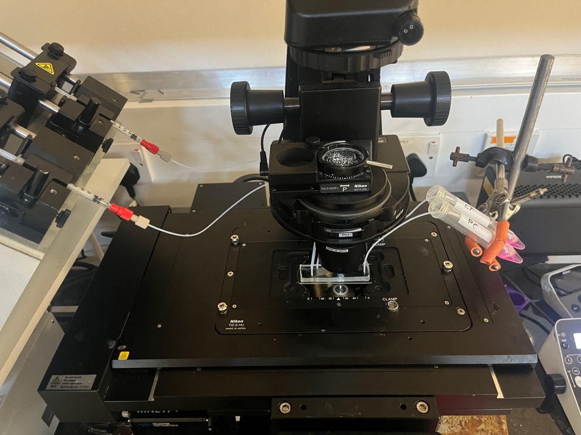
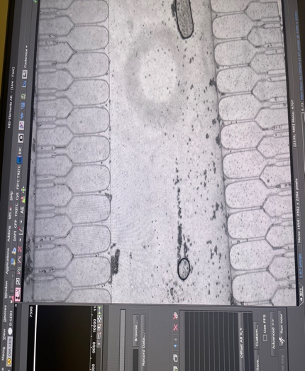
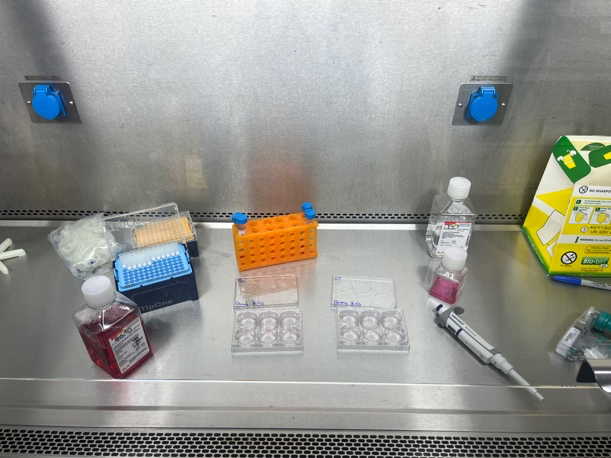

Master's Research Project
Microfluidics — Effects of Mechanical Stress on Metastatic Phenotype



Context
Circulating tumour cells experience mechanical stress during capillary transit. This project investigated whether that stress causes breast cancer cells to shift toward a more metastatic phenotype.
My Role
Individual research project. I managed all fabrication, experiments, and analysis, with training from my supervisor.
Approach
I fabricated microfluidic capillary bifurcations in PDMS, then conducted perfusion experiments to expose breast cancer cells to capillary-like mechanical stresses. I extracted mRNA, synthesised cDNA, and ran qPCRs on a gene panel I identified via literature review. I also conducted a 24-hour proliferation assay to assess the effects of capillary transit over a longer time frame.
Outcome
Found trends suggesting altered inflammation and chemotaxis responses to capillary stresses. Gained hands-on experience across the full workflow — from microfluidic fabrication through to cell culture maintenance, molecular biology and data interpretation.